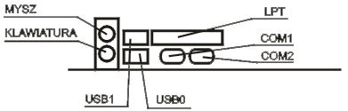

JEDNOSTKA CENTRALNA
płyta główna
Podstawowe parametry płyty głównej:
rodzaj zamontowanego Chipsetu:
dla procesorów firmy Intel;
dla procesorów AMD;
rodzaj zamontowanego układu Bios (Award, Ami, Phoenix);
częstotliwość zegara magistrali systemowej (zewnętrzna) (FSB);
pamięć Cache - obecnie montowana wewnątrz procesora;
rodzaj gniazda dla poszczególnych procesorów (Slot / Socket);
ilość gniazd modułów pamięci RAM oraz maksymalna ilość pamięci możliwej do zainstalowania w systemie;
ilość wolnych gniazd dla kart rozszerzających (ISA, PCI, Dual PCI, AGP, PCI Express x1, PCI Express x16);
max. częstotliwość taktowania procesora;
złącza IDE, Serial ATA;
porty i złącza: COM, LPT, USB 1.1, USB 2.0, IEEE 1394 (inaczej Firewire, iLink), SCSI
Tab.1. Gniazda umieszczone z tyłu komputera:
PS/2
Gniazdo klawiatury i myszy.
COM 1,COM 2
Złącza szeregowe.
LPT 1
Złącze równoległe.
USB
Uniwersalna szyna danych - możliwe podłączenie każdego urządzenia wyposażonego w to złącze.

Powrót